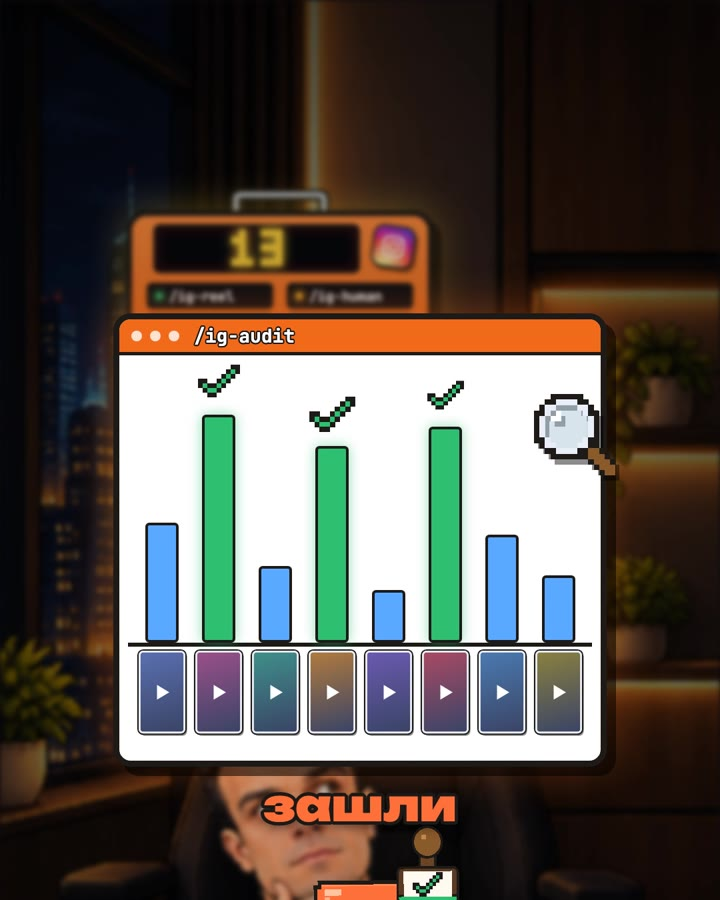

1
Разбор прошлых рилсов
/ig-auditБерёт статистику твоих постов и показывает, какие рилсы зашли, почему и что больше не снимать. Сравнивает не по просмотрам, а по тому, насколько рилс обогнал твои обычные, и по числу репостов.
Ответ берётся из твоих же данных, а не из общих советов.
Используй /ig-audit. Вот статистика моих последних рилсов: [скриншоты или цифры]. Скажи, какие зашли и почему, какие нет, и что мне больше не снимать.
Нужны данные: просмотры, охват, репосты и сохранения по каждому рилсу из статистики Инстаграма. Скриншоты подойдут.